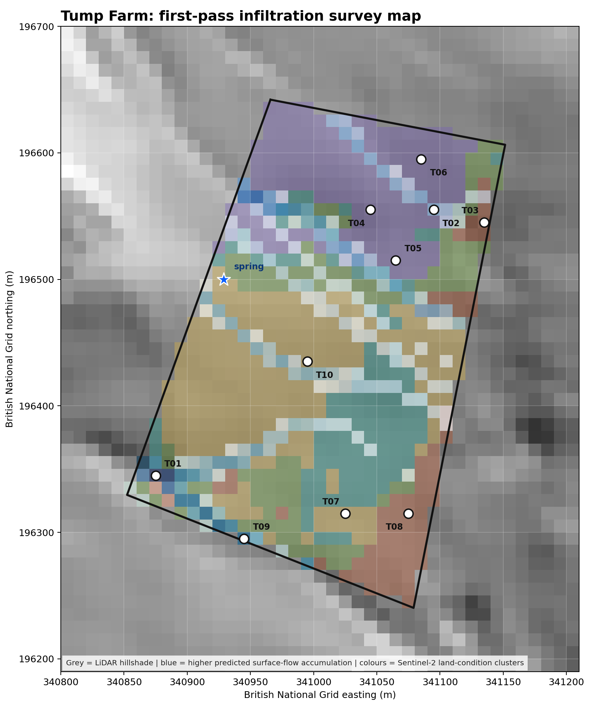

Purpose: choose a small number of infiltration-test locations that compare different land-condition signals and different hydrological positions before the site visit.

| ID | Coordinate | Satellite zone | Reason for testing |
|---|---|---|---|
| T01 | 51.662760, -2.856217 | weaker / drier vegetation | High predicted convergence with weaker/drier vegetation. |
| T02 | 51.664671, -2.853073 | vigorous / moist vegetation | High predicted convergence with vigorous/moist vegetation. |
| T03 | 51.664586, -2.852493 | weaker / drier vegetation | Low-flow hillslope with weaker/drier vegetation. |
| T04 | 51.664666, -2.853795 | vigorous / moist vegetation | Low-flow hillslope with vigorous/moist vegetation. |
| T05 | 51.664309, -2.853499 | vigorous / moist vegetation | Persistent moisture signal; investigate whether it is soil, vegetation or drainage. |
| T06 | 51.665030, -2.853224 | vigorous / moist vegetation | Seasonally variable vegetation; useful check on management or moisture sensitivity. |
| T07 | 51.662506, -2.854044 | mixed pasture condition | Paired comparison across an apparent land-condition boundary, side A; placed into the zone core where possible. |
| T08 | 51.662512, -2.853321 | weaker / drier vegetation | Paired comparison across an apparent land-condition boundary, side B; placed into the zone core where possible. |
| T09 | 51.662318, -2.855197 | mixed pasture condition | Highest local flow accumulation away from the spring exclusion zone. |
| T10 | 51.663582, -2.854498 | mixed pasture condition | Representative point for mixed pasture condition. |
The terrain layer uses the existing 2 m LiDAR-derived flow accumulation for the spring area. The vegetation layer uses Sentinel-2 Level-2A scenes from 2024-01-16 (7.4% cloud), 2024-06-02 (2.9% cloud), 2024-11-26 (0.1% cloud), 2025-04-02 (0.3% cloud). For each clear scene, NDVI and NDMI were calculated inside the assumed workable boundary. Pixels were clustered by median vegetation vigour, median moisture signal and seasonal variability.
The test points were then selected by simple stratified rules: high-flow versus low-flow topographic positions, stronger versus weaker vegetation condition, persistent moisture signals, seasonal variability, and paired points across the sharpest apparent land-condition boundary.
| Cluster | Interpretation | NDVI median | NDMI median | NDVI variability |
|---|---|---|---|---|
| 0 | weaker / drier vegetation | 0.602 | 0.102 | 0.211 |
| 1 | mixed pasture condition | 0.686 | 0.178 | 0.232 |
| 2 | mixed pasture condition | 0.677 | 0.241 | 0.196 |
| 3 | mixed pasture condition | 0.749 | 0.291 | 0.225 |
| 4 | vigorous / moist vegetation | 0.774 | 0.352 | 0.265 |
At each numbered point, run the same infiltration-ring protocol, take a photo, record ground cover, visible compaction, grazing pressure, slope position, current moisture, drains/pipes/culverts, and farmer comments. For boundary-paired tests, avoid the fence line itself: place the ring comfortably inside the apparent zone, ideally 10-20 m from the physical boundary if the field allows it.
The ring test is mainly measuring near-surface infiltration behaviour and saturated hydraulic conductivity at a small patch scale. That is useful for comparing trampling, grazing compaction, surface crusting and root/macropore effects, but it is not a direct spring-recharge measurement.